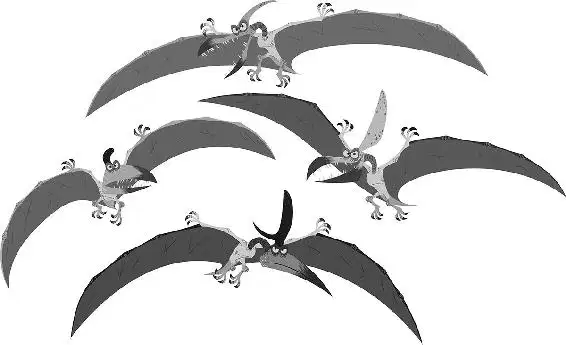

Arlo screamed as the ferocious T-rexes came roaring toward them. He turned to try and run the other way, but the Pterodactyls were blocking him. With nowhere to go and no idea what to do, Arlo curled up into a ball over Spot, protecting him.
The T-rexes were closing in, roaring so loudly it made Arlo shiver. But instead of attacking Spot and Arlo, the T-rexes grabbed the Pterodactyls with their teeth, and flung them into the air! After a few seconds of fighting, the Pterodactyls were scared off and flapped toward the horizon. Then the T-rexes turned and set their sights on Spot and Arlo.
Arlo, frozen with fear, could barely breathe as the T-rexes stomped toward him and Spot. One of them leaned right above Arlo, and he was scared to death as he looked up at her enormous toothy mouth. Arlo flinched, closing his eyes tightly as he prepared to be eaten. But she just put out her arm and helped him up.
“I hate those kind,” said the T-rex. “Lyin’ sons of crawdads. Pickin’ on a kid!”
Spot smiled up at her, panting, with his tongue hanging out and leaned against her leg. She put her hand down for Spot to sniff and scratched the top of his head. “Well, ain’t you the cutest thing,” she said, adoringly.
Arlo smiled. “Hmmm, he likes you.”
“Imagine that, Ramsey!” said the other T-rex, laughing and getting in her face. “Even with your stinky face.”
Ramsey snapped at him, annoyed. “Nash! Boundaries!” She used her arms to demonstrate. “This is my personal bubble.”
“Naw,” Nash said. “That ain’t your bubble. This is your bubble.” Nash climbed on her and they started wrestling, punching and kicking each other.
An even BIGGER T-rex angrily stomped over to them. “Nash!” he scolded. “Get out of your sister’s bubble.” Ramsey and Nash looked up at their father, Butch, and stopped wrestling. Once Butch turned toward Arlo, Nash gave Ramsey one last push.
Arlo looked up at Butch. The big T-rex towered over him. Arlo noticed an ugly scar across his giant face. He was an incredibly scary looking dinosaur! Butch eyed Arlo intensely, looking him up and down. “You got no business being out here,” Butch said.
“Yes sir, I don’t. I’m trying to get home, but I lost the river. Please, my Momma needs me,” Arlo pleaded.
Arlo asked if they knew the way to Clawtooth Mountain but the T-rexes didn’t have time to help. They were looking for their herd of longhorns and needed to find them right away.
“My genius brother lost our whole herd in one day,” Ramsey explained.
“I did not lose them, Ramsey!” shouted Nash defensively. “How many times do I have to tell you this? They just, um... they just wandered off!”
“And we still gotta find ’em,” said Butch. “We can’t help ya, kid.” Butch started to move off, but Arlo stopped him. He offered the T-rexes a deal. He and Spot would help them find the herd, if the T-rexes could take them toward Clawtooth Mountain.
“Spot can sniff out anything!” Arlo offered, trying to convince Butch to accept his offer. Butch thought about it for a moment and then agreed.
“Come on, Spot. Sniff it out, boy,” Arlo said. Ramsey held out a piece of longhorn fur for Spot to smell, so he could get the scent and track the herd. Spot immediately took off, sniffing and hunting.
“Good boy, Spot!” cheered Arlo. But Butch wasn’t so sure this would work.
The T-rexes slowly followed behind Spot and Arlo for a long while as Spot continued, nose to the ground, sniffing in search of the longhorns.
“If you’re pullin’ my leg, I’m gonna eat yours,” Butch said, frustrated and impatient.
Arlo chuckled nervously and whispered to Spot to try and move a little faster. Spot picked up the pace, searching through the open range.
Moments later, Spot shivered and tapped his leg against the ground, thumping against it with excitement. Arlo happily blurted, “He’s got something!”
The T-rexes anxiously ran forward. Then Spot lunged at the ground and snatched a bug. He gobbled it down, growling and chewing as Arlo nervously smiled.
“Ah, dang,” said Ramsey, disappointed.
Butch frowned as he circled back to Arlo. “That leg is looking pretty good about now,” he said.
Suddenly Spot began to race around, barking excitedly.
“He found somethin’!” said Ramsey.
They followed Spot and saw a single longhorn’s track leading through some tall reeds. Beyond the reeds were dozens of tracks!
“Whooooeee!” cried Nash. “We got’em!”
“Wait,” said Arlo, noticing a bright blue feather on the ground. “Do longhorns have feathers?”
“Rustlers,” muttered Butch with a disgusted scowl. He realized that thieves must have taken the herd!
